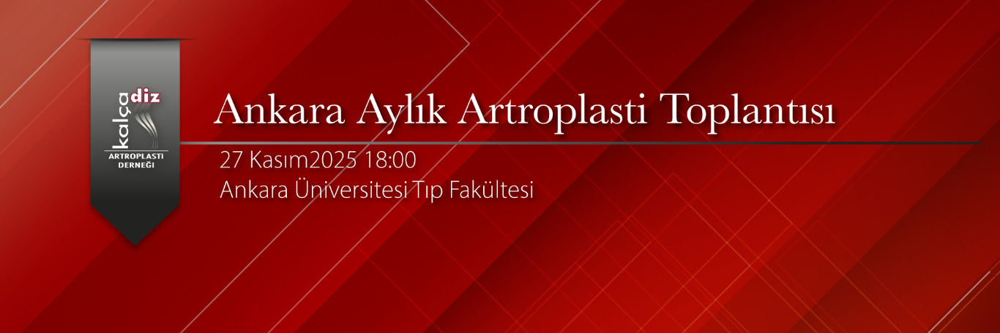

Değerli meslektaşlarımız,
Ankara Aylık Artroplasti Toplantısı 27 Kasım Perşembe 18:30'da Ankara Üniversitesi Tıp Fakültesi - Hasan Ali Yücel Konferans Salonu'nda gerçekleştirilecektir.
Kasım ayı toplantısında konu başlığımız "Ülkemizde Kalça Diz Artroplastisinin Tarihçesi ve Gelişimi'' olacaktır.
Türkiye'de kalça ve diz artroplastisinin öncülerinden olan Prof. Dr. İlker Çetin ve ve Prof. Dr. Mümtaz Alparslan yarım asırı aşan mesleki tecrübeleri ile bizlere birikimlerini aktaracaklardır. Onlara bu mesleki yolculuklarında eşlik eden birçok tecrübeli hocamız da beraber oturumda yer alacaklardır. Türkiye'de artroplastinin tüm tarihçesini ilk elden dinlemeye izin veren bu kıymetli toplantıda hem diz ve kalça artroplastisinin ülkemizdeki tarihçesi ve gelişimi tartışılacaktır.
Aylık toplantımızın faydalı geçmesi dileği ile özellikle genç asistan ve uzman arkadaşlarımızın çok faydalanacağını düşündüğümüz bu toplantıya tüm meslektaşlarımız davetlidir.
Prof. Dr. Kerem Başarır (KADAD adına)
Doç. Dr. Hakan Kocaoğlu (Ankara Üniversitesi)
Moderatör:
Prof. Dr. Bülent Erdemli
Program:
18:00 - 18:30 İkram - yemek
18:30 - 18:45 ‘Ülkemizde Total Kalça Artroplastisinin Gelişimi’
Prof. Dr. İlker ÇETİN
18:45 - 19:00 ‘Ülkemizde Total Diz Artroplastisinin Gelişimi’
Prof. Dr. Mümtaz ALPARSLAN
19:10 - 19:30 Tartışma
19:30 - 20:00 Vaka Tartışmaları
Not: Tartışılmasını istediğiniz olgular veya sunmak istediğiniz sonuçlar için planlama açısından lütfen toplantı öncesi iletişime geçiniz.
Toplantı için iletişim:
Dr. Hakan KOCAOĞLU hkn.kocaoglu@gmail.com
Dr. Kerem BAŞARIR basarirkerem@yahoo.com
